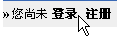
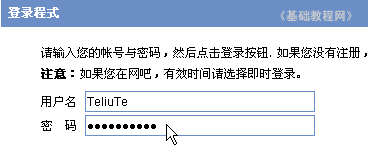
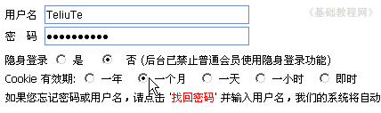

论坛新手操作基础
二、登录退出 返回目录
注册好用户后，最好找个本子记下用户名和密码，以免以后遗忘，这一课我们来学习登录论坛和安全退出论坛，下面我们来看一个练习；
1、进入论坛首页
1）输入网址，例如在地址栏输入http://bbs.laxjyj.com/后，按回车键（或点转到按钮）即可登录论坛首页；

2）此时在左上角显示“您尚未 登录 注册”，点击“登录”链接进入注册页面；

2、登录论坛
1）按照从上到下的顺序填写，在用户名那儿输入注册时的用户名，在密码框处输入密码，密码用星号隐藏，注意大小写；

2）在下面的是否隐身登录那儿，不用选择，用原来的默认即可；
3）在Cookie保留那儿可以选择一下，如果是自己的机子，可以选择“一个月”，如果是网吧里头，就选最后的“即时”，
选择“一个月”后，下次打开论坛的时候会自动登录，而不需要重新输入用户名和密码；

4）检查一下没有错误，就点下面的“提交”按钮，进行登录；

５）登录成功以后，你的用户名会显示在页面的左边，表示登录成功，
如果有错误，就仔细检查一下，看看是否是大写键密码错误，或者开启了中文输入法；
6）登录成功以后，就可以进行各项论坛操作，浏览、回复、发表等等；
3、退出论坛
1）当结束论坛操作，关闭浏览器之前，需要退出论坛，这样比较安全些，防止下一个人自动进入自己的用户，
2）在左上角自己的用户名旁边，有一个退出链接，点击后就会退出论坛；

3）这样就会退出到未登录的页面，重新显示“您尚未 登录 注册”
4）点退出后，会清除cookie，下次就必须要输入用户名和密码登录，如果是直接关闭浏览器，没有点“退出”，那么下次打开会直接进入上次的用户；
本节学习了登录和退出论坛的基本方法，如果你成功地完成了练习，请继续学习下一课内容；
本教程由86团学校TeliuTe制作|著作权所有
基础教程网：http://teliute.org/
美丽的校园……
转载和引用本站内容，请保留版权信息和本站链接。